Shimukappu
Shimukappu · Hokkaido
Shimukappu
Highlighted on the Hokkaido map.
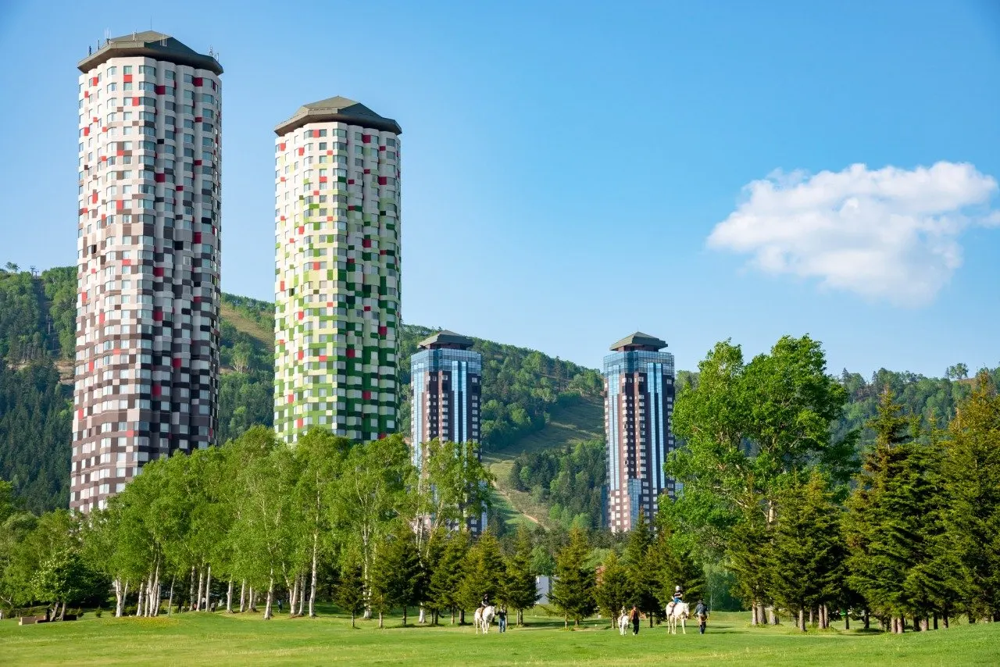
Stay
星野リゾート リゾナーレトマム
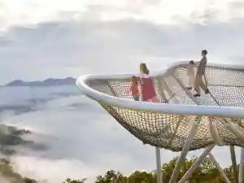
Hoshino Rizooto Rizonaaretomamu
トマム ザ・タワー by 星野リゾート
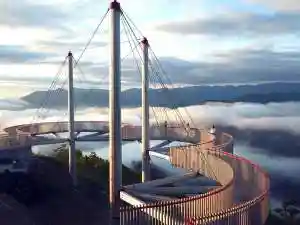
Tomamu Za Tawaa By Hoshino Rizooto
プチホテル グレーシィ・トマム
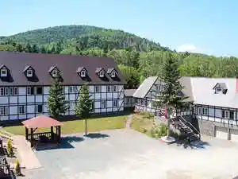
Puchihoteru Gureeshii Tomamu
グランピング トマム
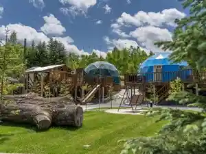
Guranpingu Tomamu
White House ホワイト ハウス
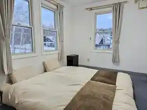
White House Howaito Hausu
Dining
道東自動車道 占冠パーキングエリア 上り線
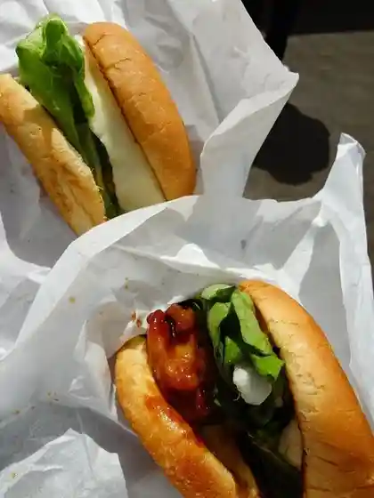
Doutou Jidoushadou Shimukappu Paakingueria Nobori Sen
レストラン ミカク

Resutoran Mikaku
雲のしたカフェ
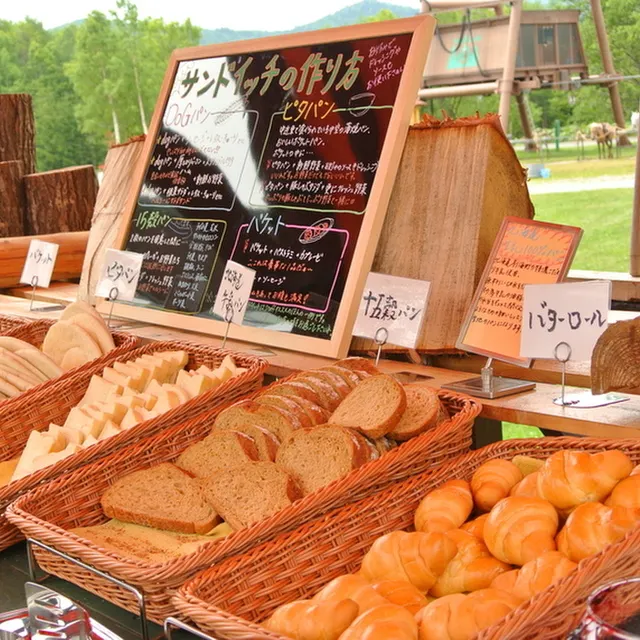
Kumo Noshita Kafe
Dining bar ガレージ No 04

Dining Bar Gareeji No 04
中華料理 チーナ
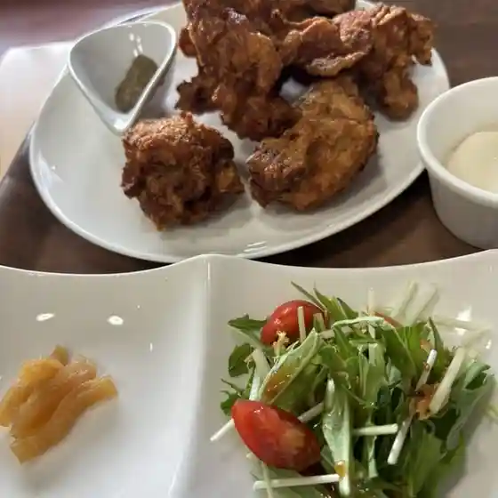
Chuukaryouri Chiina
ビュッフェダイニング hal
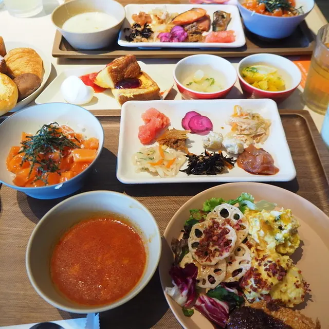
Byuffedainingu Hal
青巌峡そば
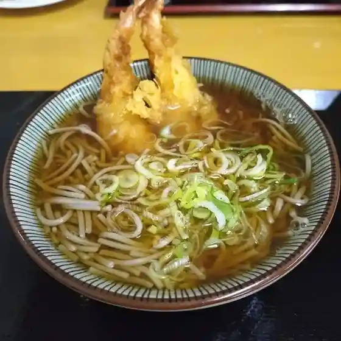
Seigan Kyou Soba
てくてく
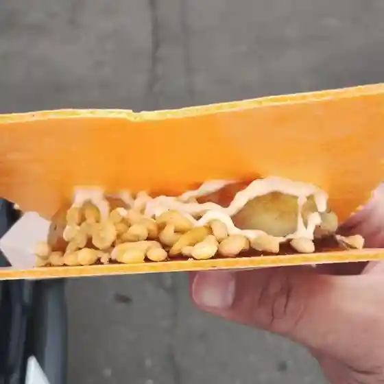
Tekuteku
道の駅 自然体感しむかっぷ
Michi No Eki Shizentai Kan Shimukappu
N43°シーフード ～鉄板焼きの店～ グリルドエイジ
N43 . Shiifuudo ~ Teppanyaki Kino Mise ~ Gurirudoeiji
エムアイ企画
Emuai Kikaku
ペンションイング・トマム
Penshon'Ingu Tomamu
創作らーめん厨房 恵比寿商店 トマム店
Sousaku Raamen Chuubou Ebisu Shouten Tomamu Mise
ブックス＆カフェ
Bukkusu & Kafe
ビスターレ・ビスターレ
Bisutaare Bisutaare
トルネード カフェ
Toruneedo Kafe
ジンギスカンキング
Jingisukankingu
BARISTART COFFEE TOMAMU
Baristart Coffee Tomamu
カネマル後藤商店
Kanemaru Gotou Shouten
麺屋 竹蔵
Men Ya Takezou
STELLA CIELO
Stella Cielo
プラチナム
Purachinamu
旬彩炉端 伸太
Jun Sai Robata Shin Ta
ひまわり
Himawari
Sights
Hoshino Resort Tomamu
Hoshino Resort Tomamu
Hoshino Resort Tomamu Ski Area
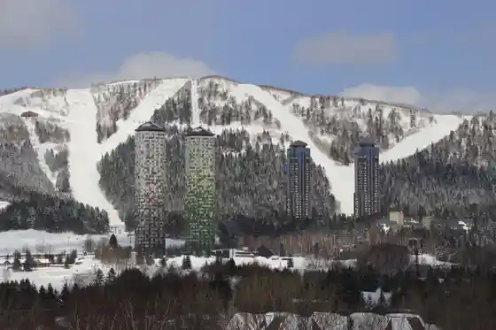
Hoshino Resort Tomamu Ski Area